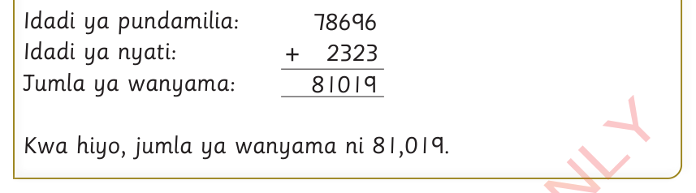

Njia

Kwa hiyo, jumla ya wanyama ni 81,019.
Zoezi la 5
Kampuni mbili za uchapishaji zilizalisha vitabu kwa ajili ya shule za msingi.
Kampuni ya kwanza ilitengeneza vitabu 5,900 na nyingine ilitengeneza vitabu 3,600.
Je, kampuni hizo zilitengeneza jumla ya vitabu vingapi?
Mfugaji aliuza lita 35,752 za maziwa mwezi Januari.
Katika mwezi Februari aliuza lita 27,888 za maziwa.
Je, mfugaji aliuza jumla ya lita ngapi za maziwa kwa miezi hiyo miwili?
Mkulima ana miti ya mbao 1,982 na miti ya matunda 7,291.
Je, mkulima huyo ana jumla ya miti mingapi?
Wagonjwa 4,618 wa malaria na 689 wa macho walitibiwa katika hospitali fulani.
Je, jumla walitibiwa wagonjwa wangapi?
Mkulima alihifadhi kilogramu 25,677 za mahindi msimu wa kwanza wa mavuno.
Akahifadhi tena kilogramu 21,913 za mahindi msimu wa pili wa mavuno.
Je, mkulima alihifadhi jumla ya kilogramu ngapi za mahindi kwa misimu yote miwili?